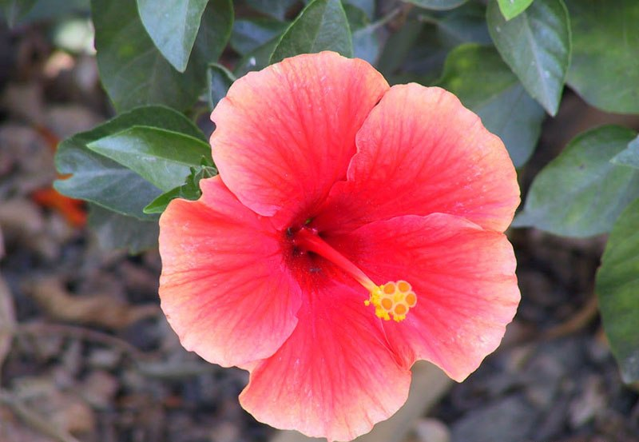
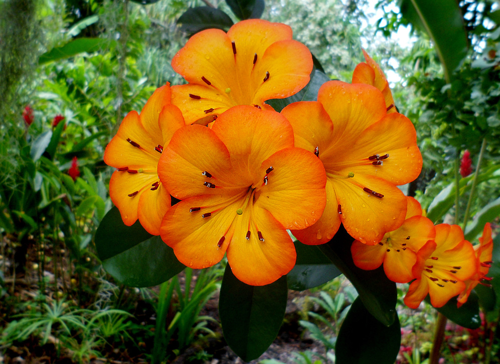
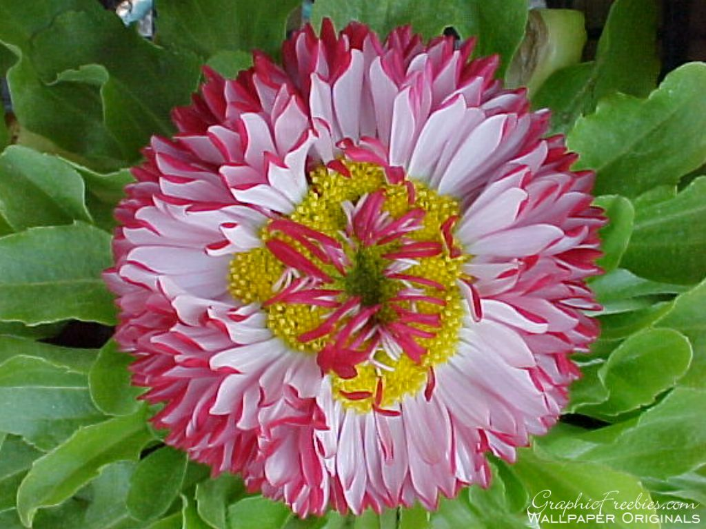

Napraforgó
1–3 m magasra növő, el nem ágazó szárú, kórós lágyszárú. Szára dudvás, belül szivacsos; érés közben durva, érdes felületű, fásodott kóróvá alakul. A régebben termesztett tájfajták magasabbak (2,5–3,2 m), száruk időnként elágazó, többtányéros. Nagyüzemi termesztésre csak az alacsony vagy középmagas (1–2 m), bókoló, és el nem ágazó, egytányérú fajták alkalmasak. Gyökérzete fejlett. A mélyre hatoló főgyökérből dúsan fejlődő oldalgyökerei 60–70 cm mélységig átszövik talajt. Ezeket a sűrűn növő, fehér gyökereket „esőgyökereknek” is nevezik, mert tömegesen akkor fejlődnek ki, ha a napraforgó sok csapadékot kap. Ennek hiányában a vizet a mélyebbre nyúló és ugyancsak nagy szívóerejű gyökereivel veszi fel.
Körömvirág
Régen virágait a drága sáfrány hamisítására használták, de sem aromájában, sem színében nem tudta helyettesíteni azt.[1] A kertbe ültetve elűzi a gyökérfonalférgeket, és távol tartja a levéltetveket is.[6] Főzete csigaölő.[3] Fűszerként az ételeknek sárgás színt, enyhén csípős és kesernyés ízt ad. Teljes virága vagy csak a szirmai, de akár a levele vagy a szára is felhasználható. Gyógynövényként ülőfürdőnek, teának, borogatásnak, tinktúrának alkalmazzák. Évszázadokon át használták főzésre. A virága gyakori összetevője volt német leveseknek és raguknak. Az angol "pot marigold" kifejezés is erre utal. A "pot" jelentése fazék, míg a "marigold" jelentése körömvirág és egyben női keresztnév is. Az aranysárga színű szirmokat vajak és sajtok színezésére is használták.
Frangipáni
A Fajok többsége kb. 3–6 m-esre növő, alacsony fa. Koronája szétterülő, olyan széles, amilyen magas. A fa mérete, a virágok alakja, színe, a levelek mérete, színe, ágai szétterülésének formája fajonként erősen különböző. Levelei fényesek, viaszosak; színük a világoszöldtől a sötétzöldig, alakjuk az oválistól az egészen hosszúkásik változhat. Ötszirmú virágai szélkerékhez hasonlóak, rengeteg színváltozattal — a fehér frangipáni (Plumeria alba) virágai hófehérek, csak a közepükön van némi sárga árnyalat. A virágok illata erőteljes, kellemes. A virágok pártacimpái propellerszerűen csavartak. A kemény, hosszúkás magház 20–60 magot rejt. A megvágott növény tejszerű, mérgező nedvet ereszt. Fája csak 500 °C fölött gyullad meg.
Kardvirág
Kerek, részarányos gumókból nő. A hagyma barnás, rostos hártyák több rétegébe burkolózik. Szára általában nem ágazik el, és 1-9 keskeny, kard alakú, vesszőhüvelybe zárt, hosszant barázdált levelet növeszt. A levélpengék keresztmetszete lehet sima vagy kereszt alakú. Az illatos füzérvirágzatok nagyok és egyoldalúak, két bőrszerű, elnyúló, zöld murvalevéllel. A csészelevelek és a szirmok megjelenése majdnem azonos. A háti csészelevél a legnagyobb; ez a három porzószál fölé hajol. A kardvirágfajok sokféle színű nemesített változata nő a házak kertjeiben: vannak telt virágú, fodros szirmú hibridek is. A vadon élő fajok virágai általában szerényebbek és kisebbek, kivadult kerti rokonaikénál
Kerti iszlag
Hibrid faj, az első idesorolt típust mintegy 100 éve állították elő a Clematis viticella és a C. lanuginosa keresztezésével. 3–4 m magasra kúszó cserje, egyszerű vagy hármas levelekkel. Virágai nagyok (8–14 cm átmérőjűek), 4-6 db széles, tányérszerűen szétterülő, sötétkékes-ibolyaszínű lepellevelekkel. A virágok az az évi hajtásokon júniustól októberig többé-kevésbé folyamatosan nyílnak. A nagyvirágú iszalagok közül ez a fajta a legrégibb, a legedzettebb. Ezért nálunk ez a legelterjedtebb.
Pompás záporvirág
A pompás záporvirág eredeti előfordulási területe Afrika déli fele volt. Manapság világszerte ültetik és termesztik, mint közkedvelt kerti dísznövényt. Az ausztráliai Queenslandban, Új-Dél-Walesben és Dél-Ausztráliában vadonnövő állományai jöttek létre.

Hibiszkusz
A fajok többsége fényigényes. A legtöbb dísznövénynek termesztett faj nem viseli el a fagyokat, ezért Magyarországon csak dézsában tartható – a legismertebb kivétel a kerti mályvacserje (törökrózsa) (H. syriacus). A Kárpát-medencében csak kevés faj honos, de ezek közül a varjúmák (dinnyefű) (H. trionum) a vetések és a kapás kultúrák egyik legveszélyesebb és legelterjedtebb gyomnövény.
Kínai Hibiszkusz
1–3 m magas, örökzöld, fásodó cserje, fa alakúvá is könnyen nevelhető. Sűrűn álló ágai 1-2 évesen kezdenek fásodni. Mivel gyorsan nő és erőteljesen bokrosodik, előszeretettel ültetik élősövénynek. Szétterülő, szív alakú leveleinek vége csipkézett. Ötszirmú, szagtalan virágai nagyok; az eredeti változatok általában vörösek, a nemesítettek színe a rózsaszínen és narancssárgán át a fehérig, illetve a sárgáig terjed; bibéjük hosszan előrenyúlik. Az egyes virágok általában egy-egy napig nyílnak. Poliploid kromoszómaszámúak.

Rhododendron sect. Vireya
Rhododendron section Vireya (vireyas) is a tropical group of Rhododendron species, numbering about 300 in all.[1] Vireyas are native to southeastern Asia and range from Thailand to Australia.

Százszorszép
Lágy szárú, évelő növény. 5–25 cm magasra nő meg. A Raunkiær-féle életforma-osztályozás szerint hemikriptofiton, azaz rügyei szorosan a talaj felszínén vannak, az elszáradt levelek védik őket. Tömött tőrózsában álló, szőrös, szabálytalan szélű, enyhén fűrészes levelei lapát formájúak. Szinte egész évben virágzik, a virágzat heliotropizmust mutat, azaz napfény hatására kinyitja szirmait, este vagy esős időben összecsukja. Levéltelen kocsányain 1,5–3 cm széles, magányosan álló fészekvirágzat fejlődik, aminek közepén a 75–125 sárga, hímnős, ötszirmú csöves virág, szélein a zigomorf, két sorban álló fehér nyelves virágok találhatók, utóbbiak fonákja vagy csak hegye gyakran rózsaszínes. A virágok öntermékenyek, rovarok porozzák. A virágporszemek tüskés felszínűek, trikolpátak (hármas felnyílásúak). Termése kb. 1 mm-es, visszásan tojásdad, bóbita nélküli kaszattermés. A magokat (kb. 1300 db egyedenként) a szél és az állatok (madarak, hangyák, földigiliszta) is terjesztik, de a cipőre is ráragadhatnak.
Kerti dália
Évelő, lágy szárú növény, amely 70-120 centiméteresre, néha azonban akár 160 centiméteresre is megnő. Lehet gyöktörzse is és/vagy gumós gyökere. A szára felálló és egyenes, a virágoknál ágazik el. A levele általában egyszerű; a levélkéi oválisak, 5-10 centiméter hosszúak. Tipikusan az őszirózsafélékre jellemző fészekvirágzata van; egy-egy növény 2-8 virágot hozhat; júliustól októberig virágzik. A virág 5-15 centiméteres száron ül és 6-10 centiméter átmérőjű; az eredeti színezete a rózsaszíntől a sötétliláig változik; azonban az ember sok más színt és virágalakot is kifejlesztett.